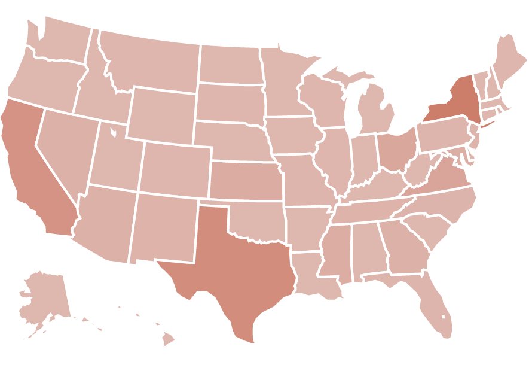

Projects

|
How to Measure Real Estate on a Website?
I developed a novel spatial web parsing technique called Web Assay, to audit Google's self-referential search results. My reporting partner Adrianne Jeffries and I developed a categorization scheme for all the things found on Google Search. We found Google's own products and answers covered 41% of the first page. Our research was cited in the congressional subcomittee hearing on Big Tech and antitrust.
|

|
Google (still) Objectifies People of Color
Building off Safiya Noble's book, "Algorithims of Opression: How Search Engines Reinforce Racism", and Latanya Sweeney's, "Discrimination in Online Ad Delivery", I developed an audit of Google Ad's Keyword Planner with my reporting partner Aaron Sankin. We found hundreds of pornographic keyword suggestions for Black, Latina, and Asian girls, but no results whatsoever for "White girls".
|

|
The Internet Research Agency: Hyperlinks, News, and Marketing Tools
How impactful was "fake news" in foreign info ops during the 2016 U.S. Presidential Election? I analyzed hyperlinks to Junk, National, and Local news sources sent by accounts released by the Senate Intelligence Committee and Twitter's Elections Integrity initiative. My analysis reveals the suprising role of local news, group identity, and free marketing tools in info ops.
|

|
Reverse Image Search
A demonstration of a simple, robust, and scalable reverse image search engine that leverages features from convolutional neural networks and the distance returned from the K-nearest neighbors algorithm.
|

|
Fwd: My Great New Friend
What cultural biases do ML algorithms pick up on?
I trained a character-level recurrent neural network with one Long Short-Term Memory layer, on 2000 emails from the Enron corpus to finish lines in a love poem. The model picked up corporate culture, and rambled endlessly about "the company", and "compensation". In collaboration with Constant Dullaart and Rhizome. Presented at the New Museum for The Making of Natural Language.
|

|
Are US Legislators Ideologically Polarized?
A timeseries visualization of legislator voting history using DW-Nominate, a metric of the liberal-conservative spectrum.
|
|  |
Who is on the Receiving End of Tax-Payer Dollars?
Government contracts are available to the public on USASpending.gov. In this notebook I show how to download records, and aggregate financial data from the U.S.' largest private prison systems.
|

|
What Research Does the NSF Support (and How Much)?
NSF grants are available to the public and contain rich metadata. For this project, I ingest XML files into SQLite tables to power dashboards and wordclouds. I look into funding history, and on-going projects from several notable Oceanographers.
|
Open Source Software

|
YouTube-Data-API
Despite having the largest userbase amongst American adults, YouTube is a social media platform that is often overlooked in academic research. youtube-data-api is a Python client to make this data source more accessible, while introducing new applications and methods to analyze this platform.
|
|
urlExpander
urlExpander is a Python package for quickly and thoroughly expanding shortened URLs. Marketing and analytics services like bit.ly are great for tracking engagement. However, these services obfuscate the destination of URLs for social media analysts.
|
|

|
S3 Helper
A high-level Python AWS-cli wrapper to smooth workflows with private data stored on s3 cloud storage. This Jupyter notebook showcases the module's ability to stream csv and json files to Pandas dataframes, and save Scikit-Learn models to s3 buckets.
|
Software and analyses adopt historical mistakes and bias. If any of the projects are dated or contain inaccuracies please let me know via email or an issue on GitHub :)
The next section contains a Javascript app that cycles through a collection of quotes I like.